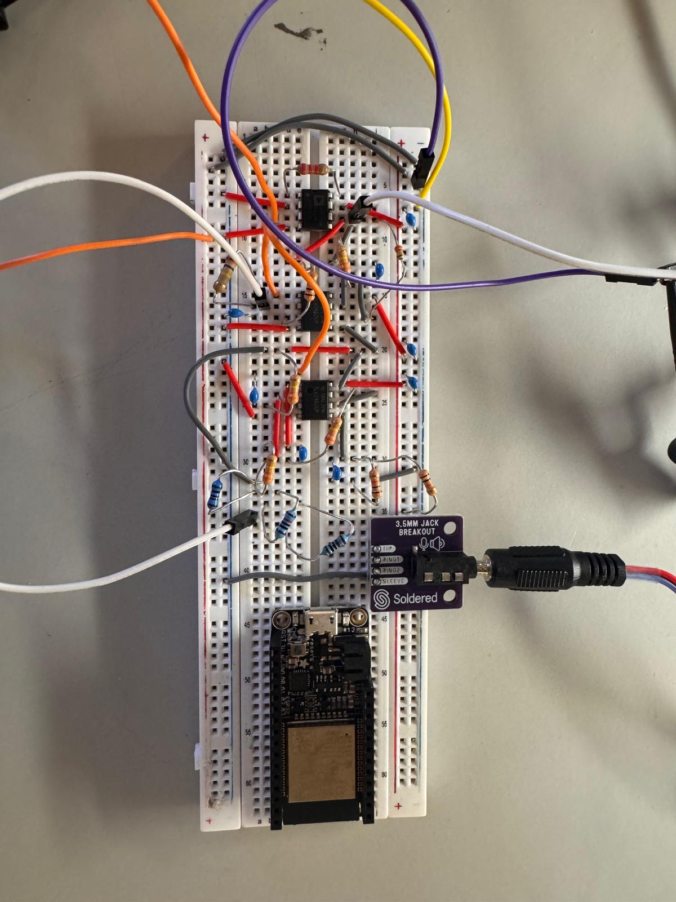
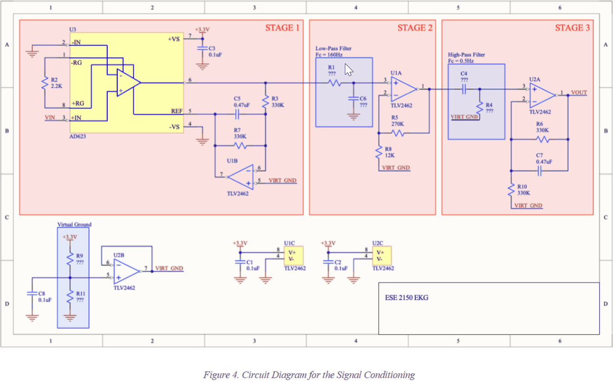

Bioelectronics · Analog Signal Conditioning · Wireless
Wireless ECG Monitor
An ECG front end for ESE 2150: AD623 instrumentation amp, virtual ground, 0.5 Hz high-pass and 160 Hz low-pass, feeding a Feather ADC that streams over BLE at 200 Hz. 61 dB maximum gain, −3 dB at 190.5 Hz.

Overview
A QRS complex is a few hundred microvolts spread over roughly 0.5 to 150 Hz, sitting on electrode drift and 60 Hz pickup that are both larger than the signal itself, so the front end is mostly about rejecting things bigger than what you want. I built a multi-stage analog front end to pull that waveform up to something the Feather's ADC could digitize: an instrumentation amplifier, a virtual ground, and 160 Hz and 0.5 Hz filtering to keep the signal in range.
Circuit Diagram

Signal Chain
- An AD623 instrumentation amplifier on the input, so the electrode pair is read differentially and the 60 Hz riding on both leads cancels instead of amplifying.
- A virtual ground at half the supply, because the heartbeat swings both ways and the circuit only has one rail to put it on.
- A 0.5 Hz high-pass to drop electrode drift, which is slower than the signal and much larger.
- A 160 Hz low-pass above the QRS band, measured at 190.5 Hz once the resistor and capacitor tolerances landed.
- The conditioned output into a Feather ADC, streamed over BLE at 200 Hz, with R-peak detection done in Python on the receiving end.
Measured Results
The first stage measured 50 V/V (34 dB) and the second brought it to 1025 V/V (60.2 dB), 61 dB at the peak. The −3 dB corner landed at 190.5 Hz against a 160 Hz design target, which comes down to resistor and capacitor tolerances.
I ran the simulator at both normal and fast heart rates, including 80 BPM and 240 BPM. Against a 1000 V/V design target, the measured ECG gain came in at 560–580 V/V, with the filtered waveform losing part of the signal amplitude.
Wireless Capture & Heart Rate
A peripheral Feather collected ECG samples and streamed them over BLE at 200 Hz to a central Feather and a computer. I wrote a Python script that read the serial samples, applied a light median filter, estimated a dynamic threshold, detected R-peaks, and computed heart rate from the first detected beats.
The detector worked on clean simulator signals at normal rates. Low-amplitude signals from actual electrodes, and very high or irregular rates, needed better electrode placement, longer sampling windows, and a smarter peak detector than the one I wrote.
Technical Report
The full ESE 2150 report is embedded below and can be scrolled directly on this page. It includes the design procedure, component choices, Bode plots, oscilloscope measurements, wireless capture workflow, and heart-rate detection code.